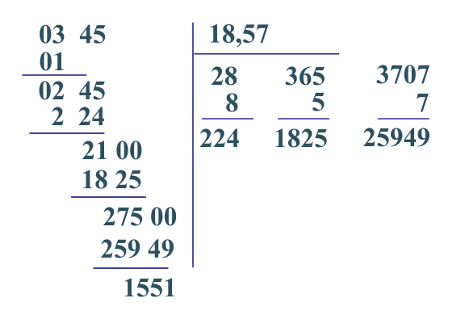
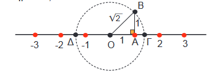

6. Θεωρία
Θεωρία
-
Το σύνολο \(\mathbb{N} = \left\{0 , 1 , 2 , 3 , \ldots\right\}\) περιέχει τους φυσικούς αριθμούς.
-
Το σύνολο \(\mathbb{Z} = \left\{\ldots - 2 , - 1 , 0 , 1 , 2 , \ldots\right\}\) περιέχει τους ακέραιους αριθμούς.
-
Οι αριθμοί που μπορούν να γραφούν με την μορφή κλάσματος \(\frac{\mu}{\nu}\) με \(\nu \ne 0\)ονομάζονται ρητοί αριθμοί και το σύνολο που τους περιέχει συμβολίζεται με \(\mathbb{Q}\).
-
Ο αριθμοί που δεν είναι ρητοί ονομάζονται άρρητοι, παραδείγματα τέτοιων αριθμών είναι το \(\pi = 3.14 \ldots\), \(e = 2 , 718 \ldots\), \(\sqrt{\left.2\right.}\), κτλ
-
Το σύνολο όλων των παραπάνω αριθμών ονομάζεται σύνολο των πραγματικών αριθμών περιέχει δηλαδή τους ρητούς και τους άρρητους αριθμούς. Συμβολίζεται με \(\mathbb{R}\).
-
Ο άξονας των πραγματικών αριθμών είναι μία ευθεία (χωρίς αρχή και τέλος). Η ευθεία αυτή αποτελείται από διαδοχικά σημεία το ένα δίπλα στο άλλο. Κάθε σημείο αναπαριστά και έναν πραγματικό αριθμό. Αφού τα σημεία της ευθείας είναι άπειρα, θα είναι άπειροι και οι αριθμοί. Το σημείο με τον αριθμό μηδέν 0 ονομάζεται αρχή του άξονα. Ο άξονας αυτός έχει προσανατολισμό, που είναι ένα βέλος που γράφουμε προς τα δεξιά. Αυτό σημαίνει ότι οι αριθμοί αυξάνονται προς στα δεξιά. Αυτό ονομάζεται και διάταξη.
-
Ένας δεκαδικός αριθμός με άπειρο αριθμό δεκαδικών ψηφίων όπου ένα τμήμα αυτών των ψηφίων επαναλαμβάνεται ονομάζεται απειροψήφιος περιοδικός δεκαδικός αριθμός ή απλά περιοδικός αριθμός, π.χ. \(0.34565656 \ldots = 0.34 \overline{\left.56\right.}\) Οι αριθμοί αυτοί είναι ρητοί και μπορούν να γραφούν με την μορφή κλάσματος. Για να γίνει η μετατροπή σε κλάσμα ακολουθούμε τον παρακάτω αλγόριθμο:
- Έστω α ο περιοδικός αριθμός
- Εντοπίζουμε το πρώτο και το δεύτερο μέρος της περιόδου.
- Πολλαπλασιάζουμε με κατάλληλες δυνάμεις του 10 ώστε η υποδιαστολή να βρεθεί μπροστά από το πρώτο και το δεύτερο μέρος της περιόδου.
- Αφαιρούμε τις δύο σχέσεις
-
Ακολουθεί ένα παράδειγμα μετατροπής του αριθμού 0.3456565656…
- Έστω α=0.34565656…
- Η περίοδος είναι το 56 και πρώτη φορά εμφανίζεται στο 0.34565656… και δεύτερη φορά στο 0.34565656…
- Πολλαπλασιάζουμε με 100 και 10000 αντίστοιχα: \(100 \alpha = 34.565656 \ldots\) και \(10000 \alpha = 3456.565656 \ldots\)
- Αφαιρούμε κατά μέλη αυτές τις δύο σχέσεις: \(10000 \alpha - 100 \alpha = 3422\) ή \(9900 \alpha = 3422\) ή \(\alpha = \frac{3422}{9900}\)
-
Οι αριθμοί \(0 = \frac{0}{1}\), \(1 = \frac{1}{1}\), \(2 = \frac{2}{1}\), \(- 2 = - \left.\frac{2}{1}\right.\) κτλ είναι ρητοί. Επίσης οι αριθμοί \(2.34 = \frac{234}{100}\), \(0.004 = \frac{4}{1000}\) κτλ είναι και αυτοί ρητοί. Οι περιοδικοί όπως παραπάνω, π.χ. \(0.345656 \ldots = \frac{3422}{9900}\) είναι ρητοί. Οι αριθμοί \(\sqrt{4} = 2\), \(\sqrt{16} = 4\) κτλ είναι ρητοί.
-
Για να υπολογίσουμε την τετραγωνική ρίζα ενός αριθμού ακολουθούμε τον παρακάτω αλγόριθμό. Ας τον περιγράψουμε υπολογίζοντας την \(\sqrt{345} = 18.57\) με δύο δεκαδικά ψηφία.

- Τοποθετούμε τον αριθμό σε σχήμα διαίρεσης
- χωρίζουμε τον αριθμό 345 σε δυάδες ψηφίων προσθέτοντας μηδενικά στα αριστερά αν χρειαστεί ( 03 45)
- Παίρνουμε τα δύο πρώτα ψηφία (03) και βρίσκουμε ένα αριθμό που αν τον υψώσουμε στην δευτέρα προσεγγίζει όσο το δυνατόν περισσότερο, χωρίς όμως να υπερβαίνει το (03). Ο αριθμός αυτός είναι ο 1 αφού \({1}^{2} = 1\). Γράφουμε το 1 στα δεξιά.
- Υπολογίζουμε το τετράγωνό του: \({1}^{2} = 1\) και γράφουμε το αποτέλεσμα κάτω από το (03), κάνουμε την αφαίρεση και βρίσκουμε 2 στα αριστερά.
- Κατεβάζουμε το (45) στα αριστερά δίπλα στο (02)
- Διπλασιάζουμε τον αριθμό στα δεξιά (το 1) και το γράφουμε από κάτω (το 2).
- Πρέπει να βρούμε ένα ψηφίο ( από 0 έως 9) που όταν το τοποθετήσουμε δίπλα στο (2) και από κάτω και όταν κάνουμε τον πολλαπλασιασμό ο αριθμός που θα βρούμε να χωράει στο (0245). Είναι το 8 αφού \(28 \cdot 8 = 224\). Τοποθετούμε το 8 δίπλα στο 1 πάνω δεξιά.
- Τοποθετούμε τον 224 κάτω από τον 245 στα αριστερά και κάνουμε την αφαίρεση και βρίσκουμε 21.
- Η μέθοδος έχει τελειώσει και έχουμε υπολογίσει την τετραγωνική ρίζα με ακρίβεια μονάδας, αν θέλουμε συνεχίζουμε για να υπολογίσουμε και δεκαδικά ψηφία.
- Κατεβάζουμε δυο μηδενικά και τοποθετούμε μια υποδιαστολή μετά το 18
- Επαναλαμβάνουμε την διαδικασία από (vi) και μετά, δηλαδή
- Διπλασιάζουμε το 18 και βρίσουμε 36 το οποίο το γράφουμε στα δεξιά και κάτω.
- Πρέπει να βρούμε ένα ψηφίο ( από 0 έως 9) που όταν το τοποθετήσουμε δίπλα και κάτω από το (36) και κάνουμε τον πολλαπλασιασμό ο αριθμός που θα βρούμε να χωράει στο (2100). Είναι το 5 αφού \(365 \cdot 5 = 1825\). Τοποθετούμε το 5 δίπλα στο 18, πάνω δεξιά.
- Τοποθετούμε τον 1825 κάτω από τον 2100 στα αριστερά και κάνουμε την αφαίρεση και βρίσκουμε 21
- Κατεβάζουμε άλλα δύο μηδενικά και επαναλαμβάνουμε την διαδικασία
- Διπλασιάζουμε το 185 και βρίσκουμε 370 το οποίο γράφουμε κάτω δεξιά.
- Πρέπει να βρούμε ένα ψηφίο ( από 0 έως 9) που όταν το τοποθετήσουμε δίπλα και κάτω από το (370) και κάνουμε τον πολλαπλασιασμό ο αριθμός που θα βρούμε να χωράει στο (27500). Είναι το 7 αφού \(3707 \cdot 7 = 25949\). Τοποθετούμε το 5 δίπλα στο 18, πάνω δεξιά.
- Τοποθετούμε τον 192500 κάτω από τον 27500 στα αριστερά και κάνουμε την αφαίρεση και βρίσκουμε 1551.
- Αν θέλουμε επαναλαμβάνουμε και για άλλα δεκαδικά ψηφία!
- Με αυτό τον τρόπο έχουμε υπολογίσει \(\sqrt{345} = 18.57\) με έλλειψη και \(\sqrt{345} = 18.58\) με υπερβολή.
-
Με αυτόν τον τρόπο μπορούμε να υπολογίσουμε π.χ. τις τετραγωνικές ρίζες του βιβλίου: \(\sqrt{2}\), \(\sqrt{13}\), \(\sqrt{3}\), \(\sqrt{50}\), \(\sqrt{72}\), \(\sqrt{1764}\), \(\sqrt{427}\) κτλ. Προφανώς με μικροϋπολογιστή τσέπης μπορούμε να απλοποιήσουμε τους υπολογισμούς.
-
Για να κατασκευάσουμε γραφικά την τετραγωνική ρίζα του 2 πρέπει να φτιάξουμε ορθογώνιο τρίγωνο με κάθετες πλευρές 1 και 1 αντίστοιχα. Η υποτείνουσα ισούται με \(\sqrt{\left.{1}^{2} + {1}^{2}\right.} = \sqrt{2}\). Με διαβήτη και κέντρο το Ο και ακτίνα ΟΒ κατασκευάζουμε κύκλο που τέμνει τον άξονα στο Γ. Η τετμημένη του Γ είναι ίση με \(\sqrt{2}\). Βλέπε την εφαρμογή 4 του βιβλίου στην σελίδα 47-48. Με παρόμοιο τρόπο αλλά με κάθετες πλευρές ίσες με 1 και 2 κατασκευάζουμε το \(\sqrt{\left.{1}^{2} + {2}^{2}\right.} = \sqrt{5}\).
